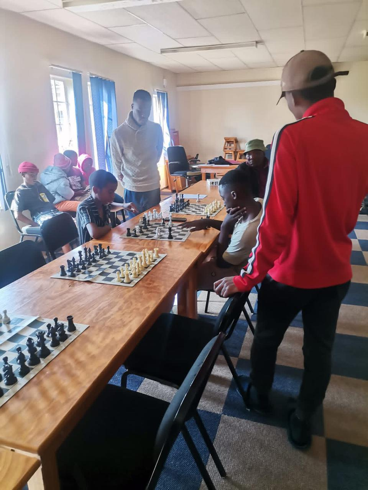

About Nondweni
The name 'Nondweni' refers both to the settlement in KwaZulu-Natal and the ancient Nondweni Greenstone Complex, a highly deformed and metamorphosed geological formation of great tectonic importance.
Nondweni, the settlement, is part of the Nqutu Local Municipality in the uMzinyathi District. Historically, it was used to house families evicted from 'Black Spots' and white-owned farms during the apartheid era. In 1976, a 'closer settlement' informally called 'Tin Town' was established, providing plots of land and temporary prefabricated huts to the residents.
Despite being divided into different sections, the people of Nondweni maintain a strong sense of unity. They participate in sports, festivals, and community projects. Nondweni continues to grow, and residents creatively overcome challenges like limited services and employment.
Interesting Facts
- Population around 4,500 in 1979, growing steadily
- Plots allocated at 21 x 35m, nominal rent
- Schools, clinic, and shops gradually added
- Under Chief Hlatshwayo
- Nondweni is divided into sections A–G, section 5 and Mahlungulu
Lifestyle
Life in Nondweni is vibrant and deeply community-oriented. People gather for sports, local markets, traditional festivals, and different social events that strengthen unity and cultural pride.
Nondweni is especially known for its passion for football. The area has several football grounds, including the well-recognized Nondweni Stadium.
Throughout the year, many tournaments are hosted, but the biggest excitement comes during school holidays and especially in December.
These tournaments not only bring the community together but also attract football clubs from surrounding regions. It is a tradition that shows the unity, energy, and love for sport within Nondweni.
Ocean Blues FC
Tigers FC
NJ Pirates FC
One Finger Maseru FC
Manchester
Besides football, Nondweni also has a strong tradition in volleyball. The local volleyball team proudly represents the community and has proven its strength by competing across many districts in KwaZulu-Natal.
Netball is another popular sport in Nondweni, with several local teams participating in community leagues and tournaments. These teams play an important role in encouraging young women to take part in sports and teamwork.


The availability of good playing facilities is one of the biggest strengths of Nondweni. These facilities give young people a safe and constructive environment, helping them to focus on positive goals and keeping them away from destructive habits. Sports continue to shape the future of the youth in Nondweni.
Beyond sports, Nondweni offers a number of places for enjoyment and relaxation. Residents and visitors can enjoy tasty fast foods, refresh with cool drinks, and spend quality time socializing. These spots provide the community with spaces to unwind and celebrate life.
History & Culture
Nondweni has a rich history, including the establishment of Tin Town and local cultural practices.
Establishment of the Settlement
-
Land Consolidation: Following the 1913 and 1936 Land Acts, the apartheid government consolidated land to create larger, ethnically segregated territories. Nondweni area, near Nqutu, was acquired by the South African Native Trust in 1964.
-
Removal of White Farmers: White farmers were bought out and their village destroyed.
-
Arrival of Displaced People: Black farm laborers and their families began moving to the area after 1972. In 1976, the government formalized the resettlement as 'Tin Town'.
Lives of Residents
-
Deplorable Conditions: Families lived in small prefabricated tin huts, overcrowded and poorly resourced.
-
Impact of Dispossession: Many families lost livestock and livelihoods; Heslerton community resisted moving fearing loss of cattle.
-
Integration with KwaZulu: Nondweni was eventually transferred under KwaZulu homeland government administration.
Pattern of Forced Removals
Nondweni's creation was part of a systematic forced resettlement program, with other similar settlements including Mondlo, Compensation, Qedeni, Limehill, and Hlobani.